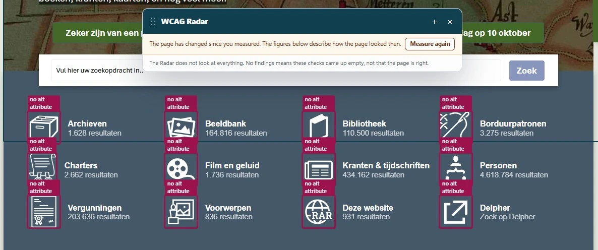
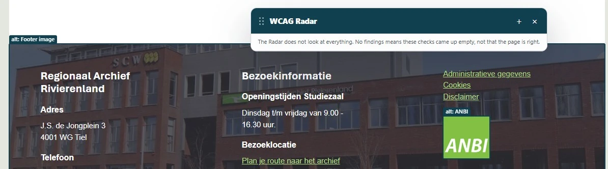
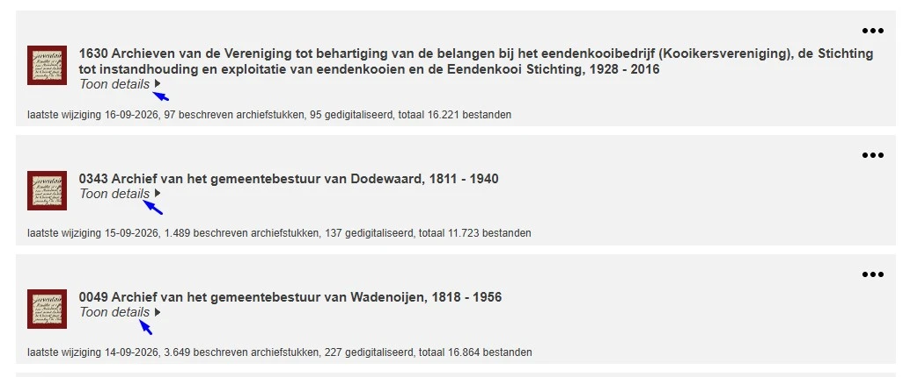
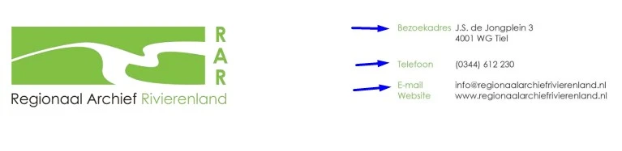

Hercontrole digitale toegankelijkheid van website regionaalarchiefrivierenland.nl
Samenvatting
Wij hebben in september 2026 de hercontrole uitgevoerd van de website https://regionaalarchiefrivierenland.nl. We hebben alle bevindingen uit de audit van mei 2026 opnieuw getoetst. Die audit ging over de website op het adres rar.omines.review; deze hercontrole gaat over de live website.
Van de 81 bevindingen uit de vorige audit zijn er 55 opgelost. De 26 bevindingen die nog openstaan, houden in dit rapport hun nummer uit de vorige audit, zodat je ze makkelijk terugvindt.
Daarnaast staan er 14 nieuwe bevindingen in dit rapport. Negen daarvan zijn ontstaan bij het oplossen van een eerdere bevinding; die hebben het label "Nieuw". De andere vijf staan in twee PDF-documenten die we bij de vorige audit niet hebben onderzocht, en hebben een nummer dat doorloopt na het hoogste nummer uit de vorige audit.
Het PDF-document "Tarieven dienstverlening RAR 2026" staat niet meer op de pagina "Digitaliseren op verzoek", maar is nog wel te openen via zijn eigen adres. We hebben het daarom opnieuw getoetst.
Nieuwe bevinding als gevolg van het oplossen van een bevinding uit de vorige audit:
Het logo bovenaan de website is een link naar de homepage. De toegankelijke naam van die link is "home", terwijl het logo de naam van de organisatie laat zien. De zichtbare tekst in het logo staat dus niet in de toegankelijke naam.
Bezoekers die de website met spraak bedienen, spreken de zichtbare tekst uit om een element te activeren. Komt die tekst niet terug in de toegankelijke naam, dan werkt de spraakopdracht niet.
User story
Ik gebruik hulpsoftware, bijvoorbeeld een schermlezer of spraakbesturing. Ik wil dat de toegankelijke naam van de logolink de zichtbare tekst uit het logo bevat. Dan herken ik de organisatie en kan ik de link activeren.
Oplossing
Zorg dat de toegankelijke naam van de logolink de zichtbare tekst uit het logo bevat. Staat er "Regionaal Archief Rivierenland" in het logo, dan kan de toegankelijke naam bijvoorbeeld "Regionaal Archief Rivierenland, homepagina" zijn.
Nieuw-2
#Nieuw-2 - Afbeelding heeft geen tekstalternatief (alt-attribuut ontbreekt)Nieuw
Impact: MatigType: TechniekWCAG: 1.1.1EN: 9.1.1.1

Nieuwe bevinding als gevolg van het oplossen van een bevinding uit de vorige audit:
Op de pagina's staat een zoekveld. Als je de knop "Zoek" activeert, verschijnt een paneel met links. Naast die links staan pictogrammen zonder tekstalternatief. Deze pictogrammen voegen geen informatie toe en horen verborgen te zijn voor hulpsoftware.
Ik lees de website met een schermlezer. Als ik een afbeelding tegenkom, dan leest mijn schermlezer een bestandsnaam voor in plaats van een beschrijving. Ik verwacht dat elke afbeelding een duidelijke beschrijving heeft of als decoratief is gemarkeerd.
Oplossing
Voeg het alt-attribuut toe aan het img-element. Is de afbeelding decoratief en draagt die geen betekenis over, dan laat je de waarde leeg: alt="".
Op deze pagina hebben meerdere links in de sectie "Actueel" de tekst "Lees verder". Die tekst zegt niets over de bestemming van de link. Dat levert verwarring op, vooral voor bezoekers met een cognitieve beperking en voor bezoekers die een schermlezer gebruiken. Vage linkteksten als "lees verder" of "klik hier" kun je beter vermijden.
Het span-element dat de links meer context geeft, heeft de CSS-class .hidden met display: none !important;. Die code verbergt het element ook voor een schermlezer.
User story
Ik volg links met een schermlezer en spring van link naar link om een pagina te scannen. Ik wil dat elke linktekst zelf beschrijft waar de link heen gaat. De linklijst van mijn schermlezer toont alleen de linktekst, en een lijst vol "Lees verder"-links vertelt mij niet welke link ik moet volgen.
Oplossing
Gebruik in plaats van de class .hidden een class .sr-only. De tekst blijft dan visueel verborgen, maar een schermlezer leest hem wel voor.
Bekijk je deze pagina op een schermresolutie van 1280 bij 1024 pixels en zoom je in tot 400%, dan is de viewport 320 pixels breed. De tekst "Hier vind je de veelgestelde vragen" op de vaste knop valt dan deels buiten beeld. Inzoomen tot 400% mag de leesbaarheid van een informatief element niet aantasten.
User story
Ik heb een visuele beperking. Als ik sterk inzoom op de pagina, verdwijnt er tekst gedeeltelijk buiten beeld. Ik verwacht dat alle tekst zichtbaar en leesbaar blijft, ook bij een hoog zoomniveau.
Oplossing
Zorg dat alle tekst zichtbaar en leesbaar blijft als een bezoeker inzoomt tot 400% op een scherm van 1280 bij 1024 pixels.
Op deze pagina staat een formulier met invoervelden voor persoonlijke gegevens, bijvoorbeeld "Naam", "E-mailadres" en "Telefoonnummer". Bij deze velden ontbreekt het autocomplete-attribuut. Vraagt een formulier om persoonlijke gegevens, dan hoort bij elk veld het juiste autocomplete-attribuut te staan. Browsers en hulpsoftware kunnen die velden dan automatisch invullen.
Ik vul formulieren in met een wachtwoordmanager of met de invulhulp van mijn browser, omdat typen langzaam of pijnlijk is. Ik wil dat elk veld dat om persoonlijke gegevens vraagt het juiste autocomplete-attribuut heeft. Zonder dat attribuut moet ik elk teken zelf typen, terwijl de gegevens al op mijn apparaat staan.
Oplossing
Voeg het autocomplete-attribuut toe aan deze invoervelden. De toegestane waarden staan in de WCAG-lijst met invoerdoelen.
Nieuw-3
#Nieuw-3 - HTML5 foutmeldingen worden getoondNieuw
Nieuwe bevinding als gevolg van het oplossen van een bevinding uit de vorige audit:
Het formulier op deze pagina gebruikt de ingebouwde HTML5-validatie. Verstuur je het formulier leeg of met een fout, dan verschijnt de standaardmelding van de browser. Deze meldingen worden niet door alle browsers en schermlezers even goed ondersteund. Elke browser toont ze anders, en hoe lang een melding blijft staan en hoe volledig die is, verschilt per browser.
Ik lees de website met een schermlezer. Als ik een formulier invul en een fout maak, hoor ik soms geen foutmelding of een onduidelijke melding. Ik verwacht dat ik altijd een duidelijke uitleg hoor over wat er fout is en hoe ik het kan verbeteren.
Oplossing
Voeg zelf foutmeldingen toe aan dit formulier. Controleer daarna of er nog meer formulieren op de website zijn die de standaardmeldingen van de browser gebruiken, en los het daar op dezelfde manier op.
Nieuw-4
#Nieuw-4 - Decoratieve afbeelding is niet verborgen voor schermlezersNieuw
Impact: MatigType: TechniekWCAG: 1.1.1EN: 9.1.1.1

Nieuwe bevinding als gevolg van het oplossen van een bevinding uit de vorige audit:
In de footer van deze pagina staat een decoratieve afbeelding met het tekstalternatief "Footer image". De afbeelding voegt geen informatie toe, dus een beschrijving is niet nodig. Nu leest een schermlezer "Footer image" voor, en dat is overbodige informatie.
Ik lees de website met een schermlezer. Als ik langs een decoratieve afbeelding kom, dan leest mijn schermlezer onnodige tekst voor. Ik verwacht dat decoratieve afbeeldingen worden overgeslagen.
Oplossing
Is de afbeelding decoratief en draagt die geen betekenis over, geef het alt-attribuut dan een lege waarde: alt="".
#43 - Skiplink werkt niet: focus gaat niet naar de juiste locatie
Impact: MatigType: TechniekWCAG: 2.4.1EN: 9.2.4.1
Deze pagina heeft de skiplink "Ga direct naar de content", maar die werkt niet. De toetsenbordfocus gaat niet naar de hoofdinhoud en blijft bovenaan de pagina staan. Met een skiplink sla je blokken over die op elke pagina terugkomen, zoals de navigatie.
User story
Ik navigeer met het toetsenbord en met een schermlezer. Ik wil dat de skiplink mijn focus voorbij de navigatie zet als ik hem activeer. Nu beweegt de focus niet en leest mijn schermlezer verder vanaf dezelfde plek.
Oplossing
Zorg dat de skiplink de toetsenbordfocus naar de hoofdinhoud verplaatst, zodat bezoekers de herhaalde elementen kunnen overslaan.
#46 - Kop is niet als kop opgemaakt
Impact: MatigType: ContentWCAG: 1.3.1EN: 9.1.3.1
Op deze pagina is de tekst "Zoek in alles" niet als kop opgemaakt. Een tekst die als kop werkt maar geen kopelement is, verliest zijn betekenis in de code. Bezoekers die een schermlezer gebruiken, kunnen er dan niet naartoe springen. Koppen zijn de belangrijkste manier om door een pagina te navigeren en de structuur te begrijpen.
Hetzelfde zie je in de zoekresultaten. Teksten als "0826 Archief van het stadsbestuur van Culemborg, 1318 - 1813" werken daar als kop van een resultaat, maar staan alleen in een a-element zonder kopelement eromheen.
User story
Ik scan de pagina door met een schermlezer van kop naar kop te springen. Ik wil dat elke tekst die een sectie aankondigt in een echt kopelement staat. Staat die tekst in een ander element, dan vindt mijn koppenlijst hem niet.
Oplossing
Maak deze teksten op met het juiste kopelement, van <h2> tot en met <h6>. Is de kop ook een link, houd de link dan intact en voeg de kop-semantiek eromheen toe:
<h2> <ahref="/archief/0826">0826 Archief van het stadsbestuur van Culemborg, 1318-1813</a> </h2>
#47 - Kop is niet als kop opgemaakt
Impact: MatigType: ContentWCAG: 1.3.1EN: 9.1.3.1
Op deze pagina staan teksten die als kop bedoeld zijn, maar er ontbreekt een kopelement. Het strong-element geeft ze het uiterlijk van een kop. In de sectie die opent via de knop "Meer..." onder "Zoek in alles" gaat het om teksten als "Hulp bij je onderzoek", "Eenvoudig zoeken" en "Uitgebreid zoeken".
Het strong-element is bedoeld om nadruk te leggen, niet om een kop te maken. Gebruik je het in plaats van een kopelement, dan klopt de structuur van de inhoud niet en kan hulpsoftware die structuur niet doorgeven.
Hetzelfde zie je in de menu's in de zoekresultaten die opengaan via de knoppen met drie stippen, bij de teksten "Mijn Studiezaal", "Reageren" en "Delen".
User story
Ik scan de pagina door met een schermlezer van kop naar kop te springen. Ik wil dat elke tekst die een sectie aankondigt in een echt kopelement staat, van <h1> tot en met <h6>. Een strong-element betekent alleen nadruk en komt niet in mijn koppenlijst terecht.
Oplossing
Haal het strong-element weg en maak deze teksten op met het juiste kopelement.
Op deze pagina komt de toetsenbordfocus na de knop "Meer.." op een onzichtbaar interactief element terecht. Onzichtbare interactieve elementen horen niet in de focusvolgorde. Bezoekers die met het toetsenbord navigeren, kunnen zo iets activeren wat ze niet zien.
User story
Ik navigeer met het toetsenbord en met een schermlezer. Ik wil dat de focus alleen op zichtbare interactieve elementen komt. Nu komt mijn focus op een bediening die ik niet zie, en weet ik niet meer waar ik op de pagina ben.
Oplossing
Zorg dat alleen zichtbare interactieve elementen focus kunnen krijgen, en dat de focusvolgorde een logische route door de pagina volgt.
Nieuw-5
#Nieuw-5 - Element onbedienbaar met toetsenbordNieuw
Nieuwe bevinding als gevolg van het oplossen van een bevinding uit de vorige audit:
Op deze pagina staat een knop met het pictogram "?". Die knop opent een paneel. De elementen in dat paneel zijn niet met het toetsenbord te bedienen. Alle interactieve elementen moeten volledig met het toetsenbord werken.
User story
Ik bedien de website met een toetsenbord. Als ik met de Tab-toets naar dit element ga, kan ik het niet activeren. Ik verwacht dat ik elk element kan bedienen met de Enter-toets of de spatiebalk.
Oplossing
Zorg dat je deze elementen kunt activeren met de Enter-toets of de spatiebalk.
In de filtersectie op deze pagina staat bij het zoekveld een knop met een "?"-pictogram die een paneel opent. De link met het "X"-pictogram in dat paneel heeft geen toegankelijke naam. Bezoekers die een schermlezer gebruiken, horen daardoor niet wat die link doet.
Er is een poging gedaan om de link een naam te geven met de visueel verborgen tekst "Sluiten". Het element met die tekst is echter verborgen met display: none, en daarmee is de tekst ook weg voor hulpsoftware.
User story
Ik activeer knoppen met een schermlezer of met spraakbesturing. Ik wil dat elke knop op de pagina een toegankelijke naam heeft. Zonder naam vertelt mijn schermlezer mij niet wat de knop doet en heeft mijn spraakopdracht geen woord om aan te spreken.
Oplossing
Geef de link een duidelijke toegankelijke naam. Dat kan met zichtbare tekst in het element, met een aria-label-attribuut, of met tekst die je visueel verbergt maar beschikbaar houdt voor hulpsoftware.
#53 - Placeholder-tekst wordt als label gebruikt
Impact: MatigType: TechniekWCAG: 3.3.2EN: 9.3.3.2
In de filtersectie op deze pagina opent de knop "Plaats" een paneel met extra filters. Het zoekveld in dat paneel heeft de placeholder-tekst "Zoeken in dit filter", maar geen blijvend label. De placeholder doet nu het werk van het label.
Een invoerveld heeft een label nodig dat altijd zichtbaar blijft. Placeholder-tekst verdwijnt zodra je begint te typen.
User story
Ik vul formulieren in met een schermlezer en wil kunnen controleren wat ik heb getypt. Ik wil dat elk invoerveld een label heeft dat zichtbaar blijft. Verdwijnt de placeholder zodra ik typ, dan zie ik niet meer waar het veld voor was.
Oplossing
Voeg een blijvend zichtbaar label toe aan dit invoerveld.
Nieuw-6
#Nieuw-6 - Toegankelijke namen van knoppen zijn niet duidelijk genoegNieuw
Impact: MatigType: TechniekWCAG: 2.4.6EN: 9.2.4.6
Nieuwe bevinding als gevolg van het oplossen van een bevinding uit de vorige audit:
In de filtersectie op deze pagina opent de knop "Plaats" een paneel met extra filters. In dat paneel staan knoppen met pijlen waarmee je de vorige en volgende opties laat zien. De toegankelijke namen van die knoppen zijn "vorige" en "volgende". Die namen zeggen niet waar de knoppen bij horen.
User story
Ik lees de website met een schermlezer. Als de knoppen alleen "vorige" en "volgende" heten, dan weet ik niet bij welk onderdeel ze horen. Ik verwacht een naam zoals "vorige plaats" of "volgende plaats".
Oplossing
Pas de toegankelijke namen aan zodat ze de functie beschrijven, bijvoorbeeld aria-label="vorige plaats" en aria-label="volgende plaats".
In de filtersectie op deze pagina verwijdert de link met het label "Archieftoegang x" het gekozen filter. Wat visueel één link is, staat in de code als twee a-elementen. Het eerste element ("Archieftoegang") heeft geen href-attribuut en is daardoor niet met het toetsenbord te bereiken. Het tweede element ("x") is dat wel, maar heeft de toegankelijke naam "x".
Bezoekers die met het toetsenbord of met een schermlezer werken, komen dus alleen de link "x" tegen. Daaruit valt niet op te maken dat die link het filter "Archieftoegang" verwijdert.
Hetzelfde probleem zie je bij de links "Archieftoegang (1.639) x" in het paneel dat opent via de knop "Materiaal".
User story
Ik gebruik het toetsenbord, een schermlezer of spraakbesturing. Ik wil dat een bediening die een filter verwijdert één interactief element is met een naam die de actie beschrijft. Hoor ik alleen "x", dan weet ik niet welk filter ik weghaal.
Oplossing
Maak van deze bediening één interactief element dat met het toetsenbord bereikbaar is, en geef het een naam die de functie beschrijft, bijvoorbeeld "filter Archieftoegang verwijderen". De zichtbare "x" mag als visuele aanduiding blijven staan, maar mag niet de enige toegankelijke naam zijn.
#56 - Knoppen met dezelfde tekst voeren een verschillende functie uit
Impact: MatigType: ContentWCAG: 2.4.6EN: 9.2.4.6

In de zoekresultaten op deze pagina staan meerdere knoppen met dezelfde zichtbare tekst, bijvoorbeeld "Toon details" en "Sluit details". Elke knop hoort bij een ander zoekresultaat, maar dat staat niet in de toegankelijke naam. Bezoekers die een schermlezer gebruiken, kunnen daardoor niet zien bij welk resultaat een knop hoort.
Hetzelfde zie je bij de knoppen met drie stippen die per zoekresultaat een menu openen. Die knoppen heten allemaal "Menu".
User story
Ik activeer knoppen met een schermlezer of met spraakbesturing, en ik scan de lijst met bedieningen. Ik wil dat knoppen die iets anders doen ook een andere naam hebben. Nu heten meerdere knoppen hetzelfde en kan ik per ongeluk de verkeerde activeren.
Oplossing
Geef elke knop een naam die beschrijft wat die knop doet en bij welk zoekresultaat die hoort.
Op deze pagina openen de knoppen met drie stippen per zoekresultaat een menu. De toetsenbordfocus wordt in dat menu niet vastgehouden. Het menu ligt over de pagina heen, maar je kunt met de Tab-toets naar elementen op de pagina eronder. Dat leidt tot verwarring en tot handelingen die je niet bedoelde.
User story
Ik navigeer door het menu met het toetsenbord of met een schermlezer. Ik wil dat de focus in het menu blijft zolang het open is. Nu kom ik met de Tab-toets in de inhoud achter het menu terecht, terwijl het menu nog open is.
Oplossing
Regel het focusbeheer van dit menu op een van deze twee manieren:
Houd de toetsenbordfocus binnen het menu zolang het open is. Bezoekers kunnen er pas uit met de sluitknop of met de Esc-toets.
Sluit het menu automatisch zodra de toetsenbordfocus het menu verlaat.
#58 - Paginatie: linktekst onvoldoende duidelijk
Impact: MatigType: ContentWCAG: 2.4.4EN: 9.2.4.4
De paginatielinks op deze pagina hebben te weinig context. Ziende bezoekers zien dat "1", "2" en "3" paginanummers zijn. Voor bezoekers met een visuele beperking en voor bezoekers die een schermlezer gebruiken, is dat niet duidelijk.
Sinds de vorige audit staat op de paginatielinks een title-attribuut met informatie over die pagina. Een title-attribuut wordt niet door alle schermlezers op dezelfde manier voorgelezen, en soms helemaal niet. Deze informatie bereikt een deel van de bezoekers dus nog steeds niet.
User story
Ik navigeer door de paginatie met een schermlezer of met spraakbesturing. Ik wil dat elke paginalink zijn doel in de code prijsgeeft, bijvoorbeeld "pagina 2". Nu hoor ik alleen het kale cijfer.
Oplossing
Voeg context toe aan de linktekst met visueel verborgen tekst of met een aria-label:
De huidige pagina in de paginatie is alleen visueel gemarkeerd, met een dikkere rand in een andere kleur. Die informatie staat niet in de code, dus een schermlezer kan niet doorgeven welke pagina actief is.
User story
Ik navigeer door de paginatie met een schermlezer. Ik wil dat de huidige pagina zijn status in de code prijsgeeft. Nu kondigt mijn schermlezer elke paginalink op dezelfde manier aan en weet ik niet op welke resultatenpagina ik ben.
Oplossing
Voeg aria-current="page" toe aan de link van de huidige pagina:
<ahref="/page-3"aria-current="page">3</a>
Staat het huidige item als tekst in plaats van als link, dan is het verschil al duidelijk.
Op deze pagina staat een complexe afbeelding zonder tekstalternatief. De afbeelding heeft geen alt-attribuut. Een complexe afbeelding, zoals een infographic of een schema, heeft een uitgebreide beschrijving nodig.
User story
Ik bekijk infographics en schema's met een schermlezer. Ik wil dat een complexe afbeelding naast een korte alt-tekst ook een langere beschrijving heeft, op de pagina zelf of op een pagina waarnaar je linkt. Een complexe afbeelding bevat meer informatie dan in één zin past.
Oplossing
Geef de informatie uit de afbeelding in tekst. Dat kan met een uitgebreide alt-tekst, met tekst op de pagina zelf, op een andere pagina of in een bestand dat je kunt downloaden. Jij weet als auteur het beste welke informatie de lezer nodig heeft: alle cijfers uit de afbeelding, of alleen de trend.
#67 - Contrastverhouding van tekst en achtergrond is minder dan 4,5:1
Impact: MatigType: TechniekWCAG: 1.4.3EN: 9.1.4.3
De tekst in de complexe afbeelding op deze pagina heeft te weinig contrast met de achtergrond. Niet alle bezoekers kunnen die tekst lezen.
De grijze teksten (#8B7A72), bijvoorbeeld "Vertrouwen van collega's en leidinggevende", hebben op de witte achtergrond een contrastverhouding van 4,1:1. De blauwe tekst (#5B7C93), bijvoorbeeld "Plezier", komt uit op 4,4:1. De groene tekst (#51817F), bijvoorbeeld "Vertrouwen", ook op 4,4:1.
User story
Ik heb een visuele beperking en lees de website soms in fel zonlicht. Ik wil dat tekst die kleiner is dan 19 pixels minimaal 4,5:1 contrast heeft met de achtergrond. Anders kan ik die tekst niet lezen.
Oplossing
Deze tekst is kleiner dan 19 pixels, dus de contrastverhouding moet minimaal 4,5:1 zijn.
Nieuw-7
#Nieuw-7 - Alleen kleur is gebruikt in de legenda bij de afbeeldingNieuw
Impact: MatigType: ContentWCAG: 1.4.1EN: 9.1.4.1
Nieuwe bevinding als gevolg van het oplossen van een bevinding uit de vorige audit:
In de complexe afbeelding op deze pagina geeft alleen kleur aan welk onderdeel bij welke categorie hoort. Het gaat om paars (#6B5A8A), groen (#4A8B8A) en oranje (#B96C4D). De onderlinge contrastverhouding is maximaal 1,5:1.
Alleen bezoekers die deze kleuren zien en van elkaar kunnen onderscheiden, zien welke kleur bij welke categorie hoort.
User story
Ik zie kleuren in afbeeldingen slecht. Als een afbeelding alleen kleur gebruikt om de legenda aan de onderdelen te koppelen, begrijp ik de verbanden niet en heb ik niets aan de afbeelding.
Oplossing
Gebruik naast kleur ook een ander verschil, bijvoorbeeld arcering, een vorm of datalabels in tekst. Je kunt dezelfde informatie ook als tekst of in een tabel naast de afbeelding zetten.
Nieuwe bevinding als gevolg van het oplossen van een bevinding uit de vorige audit:
Bekijk je deze pagina op een schermresolutie van 1280 bij 1024 pixels en zoom je in tot 200%, dan vallen de kop "Meldingstool Informatiehuishouding" en de link met dezelfde tekst weg. Bij 400%, een viewport van 320 pixels breed, gebeurt hetzelfde. Inzoomen tot 200% of 400% mag de leesbaarheid van een informatief element niet aantasten.
User story
Ik heb een visuele beperking. Als ik sterk inzoom op de pagina, verdwijnt er tekst gedeeltelijk buiten beeld. Ik verwacht dat alle tekst zichtbaar en leesbaar blijft, ook bij een hoog zoomniveau.
Oplossing
Zorg dat alles blijft werken en leesbaar blijft als een bezoeker inzoomt tot 400% op een scherm van 1280 bij 1024 pixels.
In de sectie "Uitgelicht" op deze pagina staan de elementen van een artikel in deze volgorde in de HTML: afbeelding met tekstalternatief, kop, tekst, link. Zie bijvoorbeeld het artikel "Bouw- en milieuvergunningen". Die leesvolgorde is niet betekenisvol.
Ik navigeer door nieuws- en artikellijsten met een schermlezer. Ik wil dat de kop van een artikel als eerste in de code staat, met de afbeelding en de tekst daarna. Nu hoor ik eerst de alt-tekst van een afbeelding en weet ik niet bij welk artikel die hoort.
Oplossing
Zet de kop als eerste in de HTML als een pagina meerdere artikelen bevat met een afbeelding, tekst en een kop. De aanbevolen volgorde is: kop, afbeelding, tekst. De inhoud na de kop hoort dan bij die kop, hoe de opmaak er visueel ook uitziet.
Een andere oplossing is om de afbeeldingen voor hulpsoftware te verbergen met een leeg alt-attribuut, want ze voegen geen informatie toe.
Voor de secties met een iframe geldt hetzelfde: zet ook daar de kop als eerste in de HTML.
Onder de kop "Route via Google Maps" staat een iframe-element zonder title-attribuut. Bezoekers die een schermlezer gebruiken, horen daardoor niet wat er in het iframe staat en kunnen niet bepalen of ze er iets aan hebben.
User story
Ik navigeer met een schermlezer langs iframe-elementen. Ik wil dat elk iframe een title-attribuut heeft, zodat mijn schermlezer vertelt wat er is ingesloten: een video, een kaart of een formulier.
Oplossing
Geef elk iframe-element een title-attribuut dat beschrijft wat erin staat, bijvoorbeeld:
<iframetitle="Kaart met de route naar Regionaal Archief Rivierenland"src="..."></iframe>
Op deze pagina staan lijsten onder teksten als "Dan kun je op onze website bijvoorbeeld zoeken in:", "Welke bronnen kun je op naam doorzoeken?" en "Vanaf 1926 zijn er twee soorten doodsbriefjes. In een deel ervan kun op naam zoeken:". Die lijsten hebben in de code niet de juiste lijst-semantiek. De items staan wel in li-elementen, maar het bovenliggende element geeft niet door dat het om een lijst gaat. Hulpsoftware herkent de inhoud daardoor mogelijk niet als lijst.
Sommige ARIA-rollen werken alleen in combinatie met een bijbehorende ouder- of kindrol. WAI-ARIA schrijft per rol precies voor welke dat zijn. Staan die rollen niet allemaal in de code, dan werken de elementen niet zoals bedoeld.
User story
Ik gebruik een schermlezer. Ik wil dat een groep items die eruitziet als lijst ook in de code een lijst is, zodat ik de structuur begrijp en hoor hoeveel items er zijn.
Oplossing
Voeg alle rollen toe die WAI-ARIA voor deze structuur vereist, zodat de lijst ook in de code een lijst is.
#Nieuw-9 - Afbeelding heeft geen tekstalternatief (alt-attribuut ontbreekt)Nieuw
Impact: MatigType: TechniekWCAG: 1.1.1EN: 9.1.1.1
Nieuwe bevinding als gevolg van het oplossen van een bevinding uit de vorige audit:
Op deze pagina staat een afbeelding zonder alt-attribuut, onder de kop "Van welke archiefstukken kan ik scans bestellen?".
User story
Ik lees de website met een schermlezer. Als ik een afbeelding tegenkom, dan leest mijn schermlezer een bestandsnaam voor in plaats van een beschrijving. Ik verwacht dat elke afbeelding een duidelijke beschrijving heeft of als decoratief is gemarkeerd.
Oplossing
Deze afbeelding is decoratief en draagt geen betekenis over. Voeg het alt-attribuut toe met een lege waarde: alt="".
In de bestandseigenschappen van dit PDF-document staat geen titel. Een PDF-document hoort een titel te hebben die beschrijft waar het over gaat, en die titel hoort in de titelbalk te staan in plaats van de bestandsnaam. Zo zien bezoekers meteen of het document is wat ze zoeken.
User story
Ik lees PDF's met een schermlezer en heb vaak meerdere documenten tegelijk open. Ik wil dat elk PDF-document een titel heeft in de bestandseigenschappen. Zonder titel hoor ik een bestandsnaam en weet ik niet welk document ik net heb geopend.
Oplossing
Voeg een beschrijvende titel toe aan de bestandseigenschappen. In Adobe Acrobat: ga naar Bestand > Eigenschappen, tabblad Beschrijving, en vul het veld Titel in. Stel daarna in het tabblad Beginweergave in dat de titel in de titelbalk komt te staan in plaats van de bestandsnaam.
#76 - Informatieve afbeelding is geplaatst als achtergrondafbeelding
Impact: MatigType: ContentWCAG: 1.1.1EN: 10.1.1.1
Op pagina 1 en 2 van dit PDF-document staat het logo als artefact. Een afbeelding die als artefact is gemarkeerd, is niet beschikbaar voor een schermlezer. De informatie in het logo bereikt blinde en slechtziende bezoekers daardoor niet.
User story
Ik lees de PDF met een schermlezer. Ik wil dat het logo op de eerste pagina is getagd als figuur met een tekstalternatief. Nu kondigt mijn schermlezer het logo niet aan en zie ik niet welke organisatie het document heeft uitgegeven.
Oplossing
Is het logo informatief bedoeld, tag het dan als figuur en geef het een beschrijvend tekstalternatief.
#77 - Kleurcontrast van kleine tekst is te laag
Impact: MatigType: ContentWCAG: 1.4.3EN: 10.1.4.3

Op pagina 1 van dit PDF-document staan groene teksten op een witte achtergrond, bijvoorbeeld "Bezoekadres" en "Telefoon". De contrastverhouding is 2,5:1 en dat is te laag.
User story
Ik lees PDF's met een visuele beperking. Ik wil dat tekst van normale grootte minimaal 4,5:1 contrast heeft met de achtergrond. Anders kan ik het document niet lezen.
Oplossing
Zorg dat de contrastverhouding minimaal 4,5:1 is.
#78 - Koppen niet correct opgemaakt
Impact: MatigType: ContentWCAG: 1.3.1EN: 10.1.3.1
In dit PDF-document zijn meerdere koppen niet als kop opgemaakt, bijvoorbeeld "Tarieven dienstverlening RAR 2026", "Open Data", "Digitalisering" en "Gratis digitaliseren op verzoek". De visuele structuur van het document komt daardoor niet overeen met de structuur in de tags.
User story
Ik navigeer door PDF's door van kop naar kop te springen met een schermlezer. Ik wil dat elke tekst die eruitziet als kop ook als kop is getagd. Een tekst die alleen groter is opgemaakt, vindt mijn schermlezer niet.
Oplossing
Vervang de P-tag door een kop-tag, van H1 tot en met H6, zodat de structuur in de tags overeenkomt met wat je in het document ziet.
In de metadata van dit PDF-document is de taal niet ingesteld. Het is belangrijk om de taal in te stellen. Dan leest hulpsoftware de inhoud met de juiste uitspraakregels voor.
User story
Ik lees PDF's met een schermlezer. Ik wil dat elke PDF een taalinstelling heeft in de bestandseigenschappen. Zonder taalinstelling gokt mijn schermlezer en gebruikt die de verkeerde uitspraak.
Oplossing
Stel de taal in via de bestandseigenschappen. In Adobe Acrobat: ga naar Bestand > Eigenschappen, tabblad Geavanceerd, en kies in het veld Taal de juiste taal, bijvoorbeeld Nederlands (Dutch).
Dit PDF-document heeft geen codes, waardoor de inhoud niet beschikbaar is voor een schermlezer. Wij kunnen het document daardoor ook niet volledig onderzoeken. Het gaat om alle succescriteria die met de codelaag van de PDF te maken hebben, zoals semantische koppen en tekstalternatieven bij afbeeldingen. Als je dit oplost, kunnen er dus toegankelijkheidsproblemen zichtbaar worden die nu nog niet aan het licht zijn gekomen.
User story
Ik kan het document niet zien en gebruik een schermlezer. Als ik een PDF zonder tags open, is er geen inhoud die mijn schermlezer kan voorlezen. Ik verwacht dat een PDF getagd is, zodat alle inhoud voor mij beschikbaar is.
Oplossing
Voeg codes toe aan het document die de structuur van het document weergeven.
Opslaan als getagde PDF in Word (Windows): ga naar Bestand. Kies Opslaan als Adobe PDF als je Acrobat hebt, of ga naar Meer > Exporteren > PDF/XPS-document maken. Klik in het venster dat opent op Opties en zet een vinkje bij Documentstructuurtags voor toegankelijkheid en bij Bladwijzers maken met koppen. Dat laatste werkt alleen als je echte kopstijlen hebt gebruikt.
Opslaan als getagde PDF in Word (Mac): ga naar Bestand > Opslaan als, kies PDF in het keuzemenu en selecteer Best voor elektronische distributie en toegankelijkheid. Op Mac komen de bladwijzers automatisch uit de koppen.
#81 - Kleurcontrast van kleine tekst is te laag
Impact: MatigType: ContentWCAG: 1.4.3EN: 10.1.4.3
In dit PDF-document staat op pagina 1 de paarse tekst "Hoe vind ik iemand in DTB-boeken?" op een groene achtergrond, met een contrastverhouding van 1,5:1. Op pagina 2 staat de paarse tekst "Trouwinschrijving" op een gele achtergrond, met 1,8:1. De groene tekst "Begraafboeken" op de bruine achtergrond komt uit op 2,0:1. Dit is grote tekst, dus het contrast moet minimaal 3,0:1 zijn.
Op pagina 1 staan onder "Hoe vind ik iemand in DTB-boeken?" lichtgrijze teksten op de groene achtergrond, met een contrastverhouding van 2,5:1. De paarse teksten "Belastingarchieven" en "Lidmatenregisters" staan op de bruine achtergrond, met 4,4:1. Op pagina 2 staat de paarse tekst "Let op:" op de gele achtergrond met 1,8:1, en op de bruine achtergrond met 3,9:1. De paarse tekst "Wil je meer handige tips voor archiefonderzoek, kijk dan op:" op de bruine achtergrond komt uit op 3,2:1. Dit is kleine tekst, dus het contrast moet minimaal 4,5:1 zijn.
User story
Ik lees PDF's met een visuele beperking. Ik wil dat de tekst in het document genoeg contrast heeft met de achtergrond. Anders kan ik het document niet lezen.
Oplossing
Zorg dat de contrastverhouding bij grote tekst minimaal 3,0:1 is en bij kleine tekst minimaal 4,5:1.
In de metadata van dit PDF-document is de taal niet ingesteld. Het is belangrijk om de taal in te stellen. Dan leest hulpsoftware de inhoud met de juiste uitspraakregels voor.
User story
Ik lees PDF's met een schermlezer. Ik wil dat elke PDF een taalinstelling heeft in de bestandseigenschappen. Zonder taalinstelling gokt mijn schermlezer en gebruikt die de verkeerde uitspraak.
Oplossing
Stel de taal in via de bestandseigenschappen. In Adobe Acrobat: ga naar Bestand > Eigenschappen, tabblad Geavanceerd, en kies in het veld Taal de juiste taal, bijvoorbeeld Nederlands (Dutch).
Dit PDF-document heeft geen codes, waardoor de inhoud niet beschikbaar is voor een schermlezer. Wij kunnen het document daardoor ook niet volledig onderzoeken. Het gaat om alle succescriteria die met de codelaag van de PDF te maken hebben, zoals semantische koppen en tekstalternatieven bij afbeeldingen. Als je dit oplost, kunnen er dus toegankelijkheidsproblemen zichtbaar worden die nu nog niet aan het licht zijn gekomen.
User story
Ik kan het document niet zien en gebruik een schermlezer. Als ik een PDF zonder tags open, is er geen inhoud die mijn schermlezer kan voorlezen. Ik verwacht dat een PDF getagd is, zodat alle inhoud voor mij beschikbaar is.
Oplossing
Voeg codes toe aan het document die de structuur van het document weergeven.
#84 - Kleurcontrast van grote tekst is te laag
Impact: MatigType: ContentWCAG: 1.4.3EN: 10.1.4.3
Op pagina 2 van dit PDF-document staat groene tekst (#A1F1BA) op een gele achtergrond (#C5B361), bijvoorbeeld de "0". De contrastverhouding is 1,6:1 en dat is te laag.
User story
Ik lees PDF's met een visuele beperking. Ik wil dat grote tekst minimaal 3,0:1 contrast heeft met de achtergrond. Anders kan ik de tekst niet goed lezen.
Oplossing
Dit is grote tekst, dus de contrastverhouding moet minimaal 3,0:1 zijn.
In dit PDF-document staat groene tekst (#71B147) op een witte achtergrond, bijvoorbeeld "Overzicht kranten per plaats of regio". De contrastverhouding is 2,6:1 en dat is te laag.
User story
Ik lees PDF's met een visuele beperking. Ik wil dat grote tekst minimaal 3,0:1 contrast heeft met de achtergrond. Anders kan ik de tekst niet goed lezen.
Hoe te testen
Open de PDF in een browser of in een PDF-lezer en meet met een contrastmeter de verhouding tussen de tekst en de achtergrond. Controleer of die verhouding past bij de grootte en het gewicht van de tekst.
Oplossing
Dit is grote tekst, dus de contrastverhouding moet minimaal 3,0:1 zijn.
#86 - Een deel van het document is niet voorzien van codes
Impact: MatigType: ContentWCAG: 1.3.1EN: 10.1.3.1
Dit PDF-document is gedeeltelijk voorzien van codes. De volgende inhoud heeft geen codes: "Regionaal Archief Rivierenland | J.S. de Jongplein 3 | 4001 WG Tiel | 0344 612 230 www.regionaalarchiefrivierenland.nl".
Dit deel van het document is niet beschikbaar voor mensen die de inhoud niet kunnen zien, en wij kunnen het niet onderzoeken. Als je dit oplost, kunnen er toegankelijkheidsproblemen zichtbaar worden die nu nog niet aan het licht zijn gekomen, bijvoorbeeld met de tekstlabels bij formuliervelden.
User story
Ik kan het document niet zien en gebruik een schermlezer. Als ik een PDF open, leest mijn schermlezer niet alle inhoud voor. Ik verwacht dat elk PDF-document volledig is opgemaakt.
Hoe te testen
Open de PDF in Adobe Acrobat Pro en bekijk de tagboom via Weergave > Tonen/verbergen > Navigatiedeelvensters > Tags. Koppen, lijsten, tabellen en formuliervelden horen allemaal als tag te bestaan. Draai daarna de ingebouwde toegankelijkheidscontrole en PAC, en controleer of de structuur klopt als je het document van boven naar beneden voorleest met een schermlezer.
Oplossing
Voorzie dit gedeelte van codes die de structuur van het document weergeven.
Over dit onderzoek
Leeswijzer
Onze rapporten zijn anders. Bij het bespreken van de gevonden problemen volgen wij niet de structuur van de norm, maar die van jouw website of app. Hierdoor kun je gewoon per pagina of scherm aan de slag gaan. Wel zo makkelijk! Je vindt verderop een overzicht van alle pagina’s met problemen.
We geven je bij elk gevonden issue een paar voorbeelden, maar niet een complete lijst. Controleer zelf of het probleem ook nog op andere plekken voorkomt. Zie het rapport als een leidraad.
Gebruikte norm
Dit onderzoek laat zien in hoeverre de website op dit moment voldoet aan WCAG 2.2, niveau A en AA. WCAG staat voor Web Content Accessibility Guidelines. Dit is de internationale norm voor digitale toegankelijkheid. De Europese norm EN 301 549 bevat alle eisen van WCAG op niveau A en AA.
In dit rapport hebben we korte beschrijvingen van de succescriteria uit de norm opgenomen, met een algemene uitleg erbij. Wil je ze helemaal lezen? Bekijk dan de documentatie van WCAG.
Gebruikte onderzoeksmethode
We gebruiken de onderzoeksmethode WCAG-EM van het W3C. Het proces ziet er als volgt uit:
vaststellen wat binnen en buiten scope valt
vaststellen welke technologieën zijn gebruikt
steekproef (sample) samenstellen
steekproef onderzoeken
gevonden issues beschrijven
Het grootste deel van het onderzoek doen we met de hand. Voor een deel van de toegankelijkheidseisen gebruiken we automatische tools als ondersteuning, zoals axe-core en Chrome Developer Tools.
Belangrijk om te weten
Dit rapport helpt je om de toegankelijkheid van je website te verbeteren. Maar let op: het is geen definitieve, volledige lijst van alle aanwezige toegankelijkheidsproblemen. Dat zit zo:
Het is een steekproef
Ten eerste is het onderzoek gebaseerd op een steekproef. Die is op een betrouwbare manier genomen, en de meeste problemen zullen daardoor zeker aan het licht komen. Toch kan een probleem net buiten de steekproef vallen. Bij een volgend onderzoek kan het wel ontdekt worden.
Op basis van falsificatie
We beoordelen vanuit het principe van falsificatie. Dat houdt in dat we proberen te bewijzen dat iets niet waar is, in plaats van te bevestigen dat het klopt. ‘Voldoet’ betekent daarom dat we geen reden hebben gevonden om een punt af te keuren. Maar als we later wél een reden vinden, kan het alsnog worden afgekeurd.
Voortschrijdend inzicht
Het komt voor dat de beoordeling van een succescriterium op detailniveau verandert. De norm beschrijft namelijk niet élk mogelijk scenario. Samen met andere onderzoeksbureaus overleggen we hoe we met bepaalde situaties omgaan. Zo kan iets dat nu wordt afgekeurd, soms bij een volgend onderzoek worden goedgekeurd en andersom.
Oplossen leidt tot nieuw probleem
Ten slotte kan het gebeuren dat bij het oplossen van een probleem onbedoeld een nieuw toegankelijkheidsprobleem ontstaat. Dat komt dan bij een volgend onderzoek pas naar voren.
Hoe werkt dit rapport?
Bevindingen bekijken en filteren
Alle gevonden toegankelijkheidsproblemen staan onder Gevonden problemen. Je kunt de bevindingen filteren op:
Impact (Groot, Medium, Klein, Advies) — hoe ernstig is het probleem voor de gebruiker?
Type (Content, Techniek) — moet de inhoud of de techniek worden aangepast?
Status (Open, Opgelost) — welke problemen zijn al verholpen?
Voortgang bijhouden
Je kunt je voortgang op twee manieren bijhouden:
CSV-export — exporteer alle bevindingen als CSV-bestand en laad het in een (online) spreadsheet om met je team samen te werken.
Jira-export — exporteer alle bevindingen als Jira-compatibel CSV-bestand. Importeer het via Jira > Issues > Import issues from CSV. Bevindingen worden aangemaakt als bugs met prioriteit op basis van impact.
Registreer in de browser — activeer deze optie om per bevinding bij te houden of het is opgelost. Je voortgang wordt opgeslagen in je browser. Niemand anders kan je resultaat zien. Let op: de voortgang is gekoppeld aan je browser. Als je een andere browser of een ander apparaat gebruikt, begint de telling opnieuw.
Plan van aanpak — download een geprioriteerd plan van aanpak om de gevonden problemen stap voor stap op te lossen. Dit is beschikbaar bij audits vanaf maart 2026.
Link naar een specifieke bevinding delen
Bij elke bevinding verschijnt een link-icoon wanneer je er met de muis overheen gaat. Klik op dit icoon om de directe link naar die bevinding te kopiëren. Je kunt deze link plakken in een e-mail of chatbericht, bijvoorbeeld om een vraag te stellen aan Proper Access over een specifiek punt.